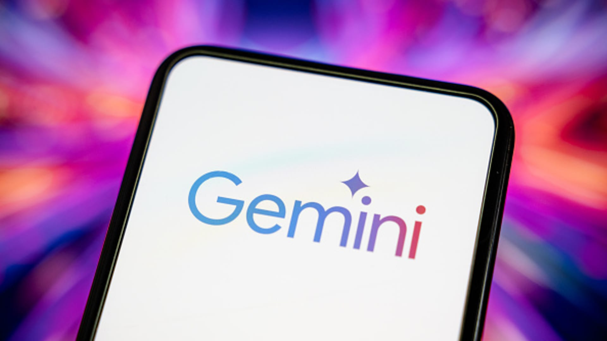

OpenAI IPO前夕连下两城：招揽Transformer共同作者Noam Shazeer及前白宫AI政策官员

Noam Shazeer（左）与 Dean Ball（右）——分别代表了 OpenAI 在技术和政策端的双重布局 | 图片来源：TechCrunch
一、导语
2026年6月18日，OpenAI在IPO前夕接连宣布两笔重磅人才引进：Transformer架构共同作者、Character AI联合创始人Noam Shazeer从Google DeepMind出走加盟；前特朗普白宫AI政策官员Dean Ball将于7月6日加入，领导新组建的「Strategic Futures」团队。这两项招揽发生在Anthropic因美国政府出口管制禁令被迫下架其最强模型的同一天，形成了AI行业极具戏剧性的力量对比。
二、背景分析：IPO倒计时与人才军备竞赛
OpenAI正处于历史上最关键的时刻。泄露的财务文件显示，公司年营收约130亿美元，但亏损远超收入——大模型训练和推理的硬件成本正在迅速吞噬收入增长。尽管如此，投资者对OpenAI IPO的期待值仍居高不下，外界普遍将其视为这个时代最具标志性的科技公司上市事件。
在这一背景下，人才战争成为各大AI实验室的核心战场。Anthropic刚刚提交了估值9650亿美元的S-1上市文件，Google DeepMind持续扩张，而Meta也在加大AI投入。Noam Shazeer的加盟，意味着OpenAI在核心技术层获得了"Attention机制之父"级别的智力资产——这不仅仅是一次普通的人事变动，而是对AI基础设施根基的控制权争夺。
三、核心内容：两大人事任命详解
Noam Shazeer：从Character AI到Google再到OpenAI的曲折回归
Noam Shazeer是AI发展史上绕不开的名字。他是2017年论文《Attention Is All You Need》的共同作者，这篇论文提出了改变整个人工智能范式的Transformer架构。离开Google后，他联合创立了Character AI并担任CEO，公司估值一度接近50亿美元。2024年，Google通过一笔价值27亿美元的收购协议将其带回，获得了Character AI的技术授权和团队成员。
然而，Shazeer在Google的日子并不平静。据TechCrunch报道，他曾在公司内部讨论板上发表关于跨性别身份和加沙战争等争议观点，导致管理层删除其帖子。这些争议是否会随他进入OpenAI尚不明朗。
Shazeer早前在Google DeepMind担任Gemini项目联合负责人，加盟OpenAI后将直接为Sam Altman带来Transformer架构的第一手经验——这对于OpenAI未来模型设计（尤其是GPT系列迭代和推理路径优化）可能具有决定性意义。
Dean Ball：前白宫AI政策官员的战略价值
Dean Ball的加入则代表了OpenAI在政策端的深思熟虑。他曾在前特朗普政府内帮助制定了《美国AI行动计划》（America's AI Action Plan），并担任Foundation for American Innovation高级研究员。他的到来意味着OpenAI正在系统性构建与华盛顿的沟通桥梁。
Ball将领导新成立的「Strategic Futures」团队，直接向首席战略官Jason Kwon汇报。在X上公布的声明中，Ball明确指出该团队将聚焦：灾难性风险评估、递归自我改进监控、劳动力市场影响分析，以及前沿实验室与政府（特别是联邦政府）的关系维护。他在博文中写道：
「内部治理将比大多数人意识到的更加决定AI的未来。」
—— Dean Ball
这一定位恰逢Anthropic因过度渲染安全风险而招致监管反弹——美国政府直接下令在全球关闭Claude Fable 5和Mythos 5，Amazon CEO与官员的会谈被认为是触发因素之一。Ball的出现，让OpenAI在政策博弈中拥有了比Anthropic更早、更系统的布局。

AI行业的政策与监管格局正在加速成型 | 图片来源：Getty Images via CNBC
四、各方反应
消息公布后，业界反应迅速而分化。
技术圈：Yuchen Jin（金昱辰）在X上率先报道Shazeer离开Google的消息，引发广泛讨论。不少开发者感叹「Transformer之父终于归位」，但也有声音担忧Shazeer的争议历史可能给OpenAI带来PR风险。Matt Pocock等开发者则在讨论这波人才流动对开源社区的影响。
竞争对手：Anthropic在同期经历了其史上最黑暗的一周——从提交9650亿美元IPO申请到被迫全球下架最强模型的过山车。DeepMind CEO Demis Hassabis和Anthropic CEO Dario Amodei同日呼吁G7组建AI联盟排除中国，显示地缘政治维度已成为AI竞争的核心变量。
政策层面：就在同一天，伯尼·桑德斯提出了一项7万亿美元的宏伟AI计划，建议对大型AI公司征收50%股票税并设立AI董事会。这一提案虽然通过概率极低，但折射了民意对AI权力集中的深层焦虑——皮尤民调显示63%美国人认为AI发展太快。
五、深度解读
这两项人事任命放到一起看，揭示了一个清晰的战略意图：OpenAI在IPO前夕不再仅仅是「一家卖API的AI公司」，而是试图成为同时掌控技术底层和监管话语权的AI超级平台。
技术线：Shazeer的回归意味着OpenAI可能在下一代模型架构上寻求突破。当前GPT-5.5系列（包括Instant版）已在健康问答、推理能力等方面追平前沿Thinking模型，但Transformer本身已有近十年历史。Shazeer作为架构原创者，完全有能力在下一代Attention变体或替代架构上提出革命性方案。
政策线：Ball的加入则让OpenAI在华盛顿获得了一个懂「内部机制」的操盘手。考虑到特朗普政府对Anthropic的强硬态度——动用出口管制工具关闭其产品——政府关系已不是「锦上添花」，而是直接影响业务存亡的核心能力。OpenAI的Strategic Futures团队将超越传统的政府事务角色，直接参与前沿AI的内部治理设计。
财务背景：值得玩味的是，泄露文件显示OpenAI年营收130亿美元但严重亏损，而公司恰恰在此时大幅加码人力成本。这传递了一个清晰的信号：人才成本对OpenAI而言不是需要「压缩」的开支，而是IPO估值故事中最核心的叙事要素——市场对OpenAI的估值不再基于当前盈利，而是基于其能否在技术、政策、人才三条战线上同时领跑。
六、总结
Noam Shazeer和Dean Ball的加入，标志着OpenAI在IPO前完成了技术和政策的双重拼图。当Anthropic陷入监管困境、Google DeepMind面临人才流失、Meta忙于内部重组之时，OpenAI正在以一种系统性的方式同时锁定技术领导力和政策优势——而这一切，正是资本市场最想看到的故事。
原文：OpenAI is bringing on some big guns in the lead-up to its IPO — TechCrunch
看今日完整快报 →